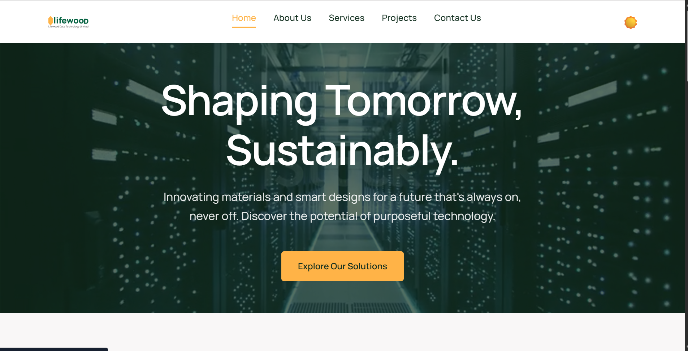
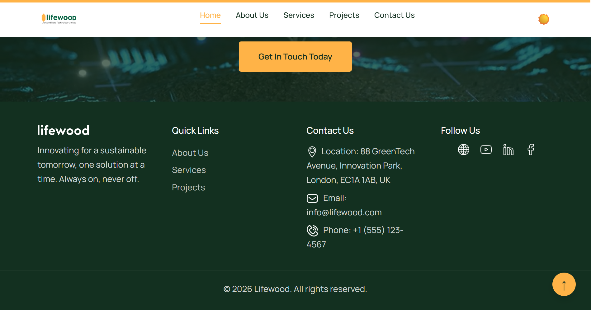
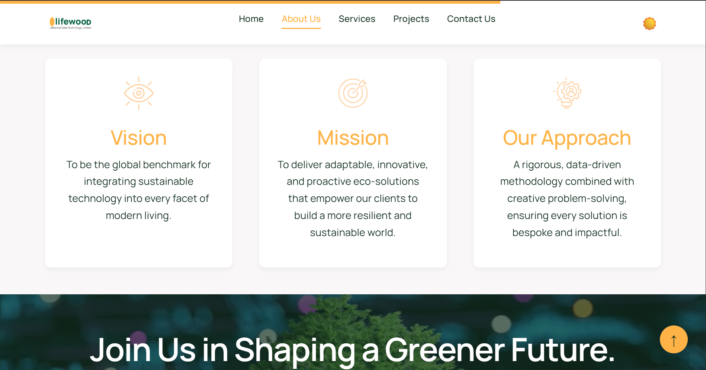
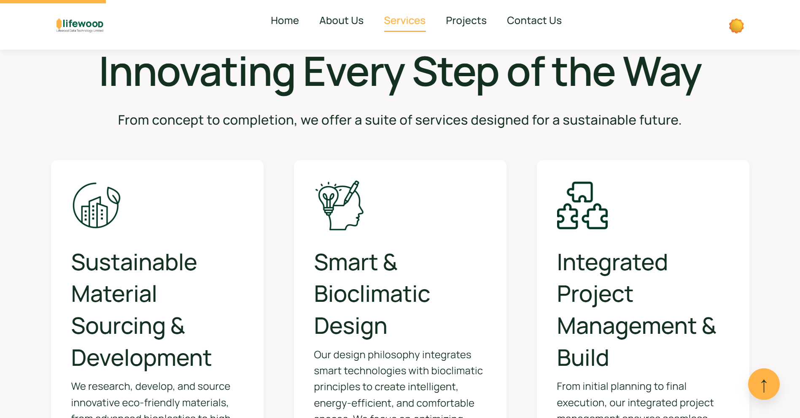
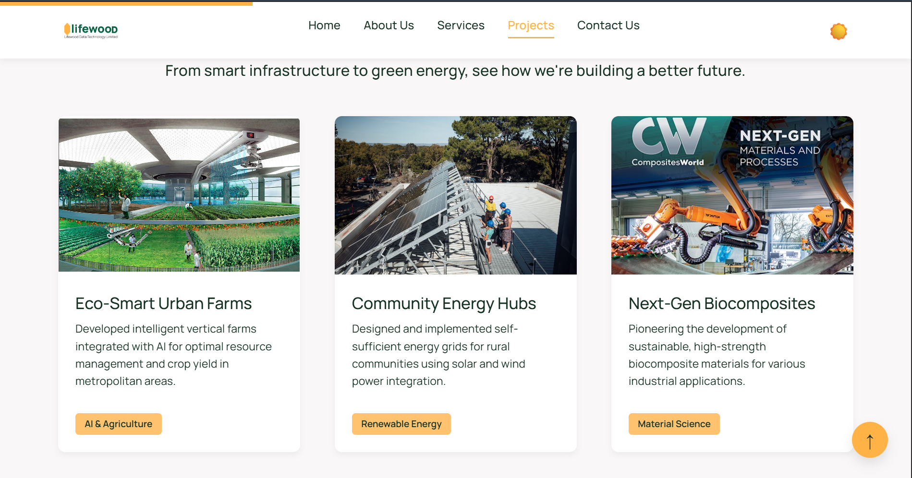

OVERVIEW
Project Overview
The Lifewood Website Prototype is a fully functional, multi-page company website built for Lifewood — a sustainable technology company. What makes this project different from the others in my portfolio is the process: this was my deliberate experiment in prompt engineering, exploring how to craft precise, one-shot AI prompts that produce production-quality results with minimal iteration.
The site includes a full Home page with a video hero section, an About page, a Services page with a career section, a Projects page, and a Contact page — all with working dark/light mode toggling, smooth navigation, responsive design, and polished UI details. The entire codebase is plain HTML, CSS, and JavaScript — no frameworks — which also demonstrates that the right prompt can generate clean, maintainable vanilla code, not just framework-heavy boilerplate.
MY ROLE
- Prompt Engineer
- Quality Reviewer
- Visual Direction & Layout Design
- Developer (manual refinements)
TECH STACK
KEY FEATURES
- Full multi-page website — Home, About, Services, Projects, and Contact pages
- Dark / Light mode toggle with persistent preference
- Video hero section with background autoplay
- Services section with icon cards and a team career CTA
- Contact page with a functional contact form layout
- Footer with real social links (YouTube, LinkedIn, Facebook, company website)
- Responsive design — works cleanly across desktop, tablet, and mobile
- Smooth scroll navigation and active link highlighting
- Consistent visual language across all pages — typography, color, spacing
- Entirely vanilla — no JavaScript frameworks, no CSS preprocessors
PROBLEM → SOLUTION
Problem: The company needed a professional website prototype quickly. The question was: can AI-assisted prompt engineering produce something genuinely production-quality, not just "good enough for a mockup"?
Solution: Built the entire site through structured, iterative prompt engineering — treating each prompt as a specification document. The result was a fully navigable, multi-page website with real UI polish, deployed on Vercel, that looks and behaves like a hand-crafted site.
CHALLENGES
- Maintaining visual consistency across separate pages generated by different prompts — color, spacing, typography, and component style had to stay cohesive
- Getting clean, framework-free vanilla JS output — AI tends to reach for libraries by default; prompts had to explicitly constrain this
- Dark/light mode state management across page navigations without a framework's state system
- Learning to recognize when AI output needs manual refinement versus when the prompt itself needs to be rewritten
LEARNINGS
- Prompt engineering is a real, learnable skill — specificity, constraints, tone, and audience definition all shape output quality dramatically
- AI-assisted development works best when the developer brings strong code taste and can evaluate output critically, not just visually
- Multi-page vanilla HTML/CSS/JS architecture — managing shared styles, navigation state, and dark mode without a build system
- How to define visual language in plain text — translating design intent into prompt language that produces accurate output
- The difference between "working" and "good" — reviewing AI-generated code for quality, not just functionality